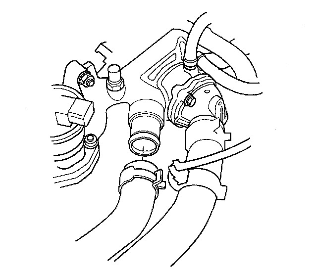
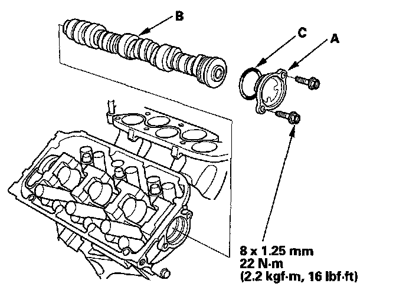
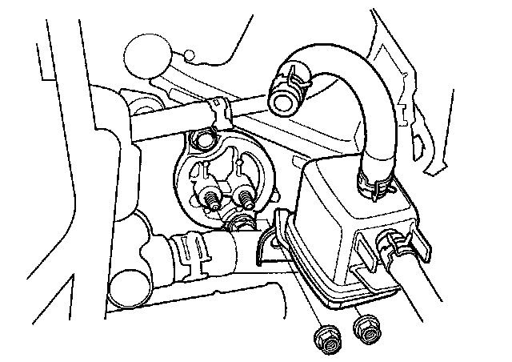
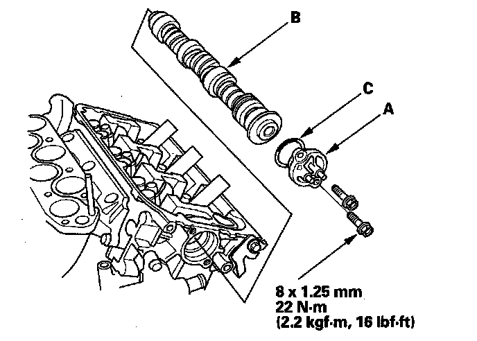

Camshaft Replacement
Camshaft ReplacementFront
1. Make sure you have the anti-theft codes for the audio system and navigation system (if equipped).
2. Disconnect the negative cable from the battery first, then disconnect the positive cable.
3. Remove the battery and battery box.
4. Drain the engine coolant.
5. Remove the upper radiator hose.

6. Remove the exhaust gas recirculation (EGR) valve.
7. Remove the timing belt.
8. Remove the rocker arm assembly.
9. Remove the front camshaft pulley.
10. Remove the thrust cover (A), then remove the camshaft (B).

11. Install the camshaft in the reverse order of removal. Always use a new O-ring (C). Apply new engine oil to the journals and cam lobes.
12. Apply new engine oil to the threads of the camshaft pulley mounting bolt, then install the front camshaft pulley.
13. Install the rocker arm assembly, then tighten the mounting bolts.
14. Install the timing belt.
15. Adjust the valve clearance.
16. Install the upper radiator hose.
17. Install the battery and battery box. Clean the battery posts and cable terminals with sandpaper, then assemble them and apply grease to prevent corrosion.
18. Fill the radiator with engine coolant and bleed the air out from the system.
19. Do the crankshaft position (CKP) pattern clear/CKP pattern learn procedure.
20. Do the steering column position memorization.
21. Enter the anti-theft codes for the audio system and navigation system (if equipped).
22. Set the clock.
Rear
1. Remove the intake manifold.
2. Remove the two nuts securing the purge joint.

3. Remove the brake lines from the master cylinder.
4. Remove the timing belt.
5. Remove the rocker arm assembly.
6. Remove the rear camshaft pulley.
7. Remove the thrust cover (A), then remove the camshaft (B).

8. Install the camshaft in the reverse order of removal. Always use a new O-ring (C). Apply new engine oil to the journals and cam lobes.
9. Apply new engine oil to the threads of the camshaft pulley mounting bolt, then install the rear camshaft pulley.
10. Install the rocker arm assembly, then tighten the mounting bolts.
11. Install the timing belt.
12. Adjust the valve clearance.
13. Install the brake lines and do the brake system bleeding procedure.
14. Do the CKP pattern clear/CKP pattern learn procedure.